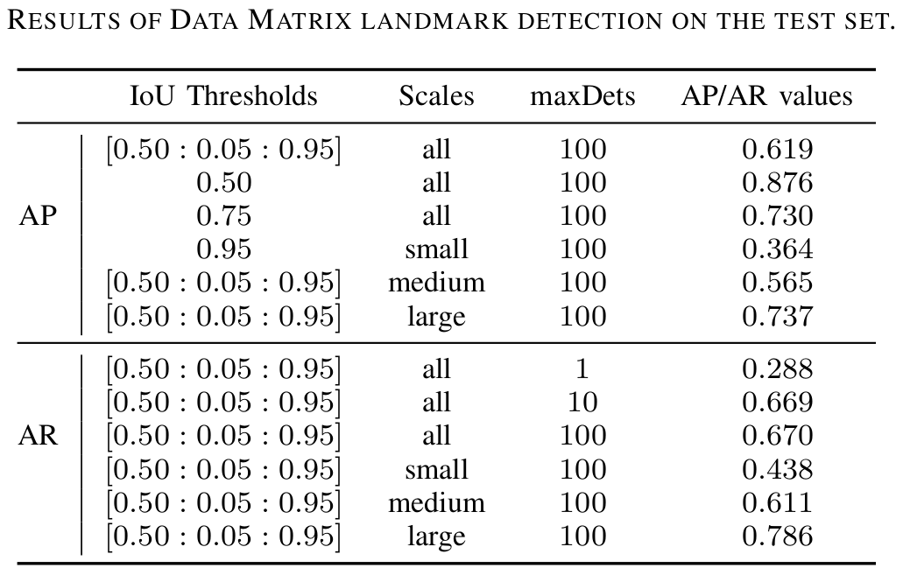

bag-of-models
Mar 2020 - now
This is a guide for Deep Learning practitioners. It covers Tensorflow and Pytorch techniques to train the best-known models for a wide-range of fields.
bag-of-models Project
This is a guide for Deep Learning practitioners. It covers Tensorflow and Pytorch techniques to train the best-known models for a wide-range of fields. At the beginning of my journey of learning Deep Learning in practice, the most difficult thing for me was filtering out all the information, because every practicioner has one repository and it seems that they have results but their code is too complex for a beginner. Therefore, I started with a Tensorflow Specialization and as I was learning, I was doing my test cases for myself. In my opinion, the easiest way to start is with Image Classification because it does not resort as much as effort as the other fields. The effort here is important, because it is an effort related to the complexity of conceiving the model in practice, so less effort means a more understandable and easier code. Thus, I started to download one dataset (CINIC10), then I tried to replicate the models training that I was studying through the respective papers (I went from AlexNet to MobileNet). The code is not the most efficient one but it was done by a beginner so I hope that it is clear enough.
After Image Classification, I wanted to study Object Detection, which seems a trendy Computer Vision task but it was difficult to assimilate all the little tricks behind each choice of the authors of the most well-known architectures. At the same time, in my work the opportunity of working also in Object Detection arose. So, it was a win-win situation. First, I attend the deeplizard course about Pytorch because I wanted to know all the decent possibilities I had in terms of Deep Learning frameworks. Hence, Pytorch was used to study this Computer Vision task.
Now, you can decide which of the branches of this project you want to check:
Image Classification
First of all, for data loading I used in every model the tf.data module. It allows to create a full pipeline that aggregates: the loading from disk, data augmentation, and batch formation. I did not go too deep in augmentation because the objective at this point would be to practice the models creation and try to understand the various ways of doing it by using Tensorflow2.0. In my opinion, there are three global ways to deploy a model whose usage depends on the architecture's layout. If the model is straightforward (the most easiest ones) we can use the Sequential API; on the other hand, if the model resorts layers concatenation and "parallel operations" (more complex models), we should use the Functional API; finally, if we want a fully-customizable foward propagation we can use Model subclassing.
During this study, I just used the Sequential API for the easiest models and the Functional API for the more complex ones. Therefore, the first three models - AlexNet, ZFNet and VGG16 - were created the Sequential API due to their simple design. The remaining models - ResNet18, GoogLeNet, Xception and MobileNet - were designed through the Functional API.
Theoretically, it is important to highlight some key points in the history of Convolutional Neural Networks for Image Classification, that are now used or have an influence on the most moder architectures:
- AlexNet is the first Convolutional Neural Network that obtained a quite important result in the ImageNet challenge;
- ZFNet showed how it would be possible to improve the network's layout by visualizing what is going on inside of it;
- VGG16 showed that deeper convolutional neural networks can be more accurate than shallower networks;
- The more layers a neuronal network has, the harder it is to train. Thus, ResNet showed how it is possible to train deep neural network in a simpler fashion by applying residual blocks with skip connections.
You can check all notebook at tmralmeida.
Object Detection
faster-rcnn-data-matrix
Mar 2020
This work presents an implementation of a Faster R-CNN model to detect Data Matrix. This architecture demonstrated quite accurate and consistent results by...
faster-rcnn-data-matrix Project
This work presents an implementation of a Faster R-CNN model to detect Data Matrix. This architecture demonstrated quite accurate and consistent results by detecting almost all landmarks throughout the test set.
It arose during my research work at University of Aveiro, Portugal. In this project, I went through every step of training a deep neural network: we collected data (images of this type of landmarks in different environments); we labeled that data through the Labelbox app; then, we trained and evaluated the Faster R-CNN model through the Detectron2 platform, which is a research platform that contains several state-of-the-art models such as Faster R-CNN, Mask R-CNN, RetinaNet, and DensePose ready to use.
Advice: For those who don't have much time to design the architecture, this kind of platforms is totally worth it.
1. Dataset creation
The dataset is one of the most important pieces of the overall Machine Learning solution, since each decision of the model is based on a previous training, which is performed on that data. Therefore, if the training procedure has been compromised, then the inference quality of the model will be worse. Thus, in this stage of the work, we labeled correctly 156 training frames and 224 test images. This distribution of training/test sets is not either the most common one or the most correct one. However, the number of class objects to detect is just one, and, although it is a small patch of the image, it is a pretty distinguishable object from the rest of the image. So, the training set is equally distributed by two different environments: a common laboratory room with several objects spread around and a workshop with machinery. These choices allow to obtain a more representative dataset. Regarding the test set, this is also equally distributed into two different enviroments: a hallway and a different part of the workshop used in the training set.
The two images below are 2 samples used in the training set. The left image represents an environment associated to a manufacturing facility and the right image represents a visually cluttered environment (many different objects) in a laboratory room.
Regarding the test set, two images are shown as examples: from a more visually neat environment (left image) to a more filled and cluttered one ( right image).
2. Faster R-CNN Training
We decided to use this architecture because this type of deep neural networks are very performants (in comparison to other object detection architectures) when the objective is to detect small patches of the image. Moreover, the system where this neural network would be used (an Automated Guided Vehicle) does not move at high speeds, so the high-latency disadvantage of a proposal network would not be a problem in this application. It is worth mentioning that when you are at the phase of choosing which Machine Learning approach to use, you have to take into account the practical application where you are working at (Deep Learning is sometimes overkill for some applications, Machine Learning is much more than just Deep Learning).
The training procedure of a deep neural network can be divided into 3 main steps: data loading, forward propagation and back propagation. The first step in this work implied to register our dataset in the dataset catalog of Detectron2. This is no more than a function that translates our dataset in a dictionary with certain fields. You can check all these steps in my notebook. Finally, the second and third steps, Detectron2 makes everything by us, we just need to know how to use their API and choose some hyperparameters such as: batch size, learning rate, and the number of iterations.
3. Faster R-CNN Evaluation
The evaluation of the model was also performed through the Detectron2 API. To do so, we evaluate our model trough the COCO metrics (the figure below shows our results).
The most important overall result is 0.876 for AP@0.5. Why? Because 0.5 is a fair value for the IoU threshold, the scales are all and the number maximum of detections is 100 (a suitable value to match the reality). In addition, the recall is higher than the precision, implying that the number of false positives is higher than the number of false negatives. This means that the model detects almost all the Data Matrix landmarks, but also detects some other objects that are not. In our system this is preferable since we use a Data Matrix decoder in a further step. So, if the detected object is not a Data Matrix, the decoder would return nothing. Comparing to the Data Matrix detection provided by libdmtx Python library, only 45% of the test set frames were accurately processed by this classical algorithm, being 40 times slower than the model that we trained in this project.
Finally, we show a video that demonstrate part of the qualitative results of the test set. The results shown here are not at the normal speed due to the video size (this is 1fps and our model can achieve 7.4fps).
You can check the repository at tmralmeida.